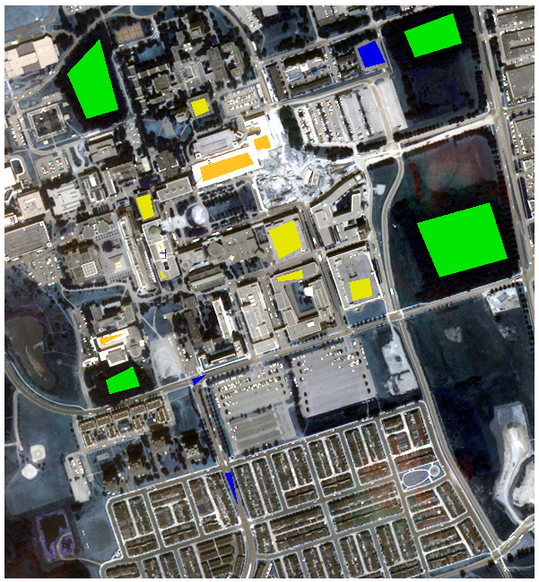
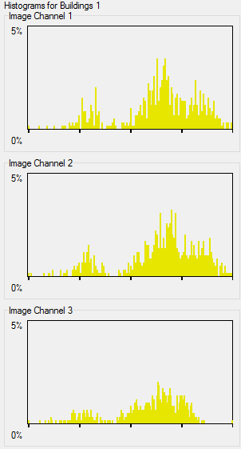
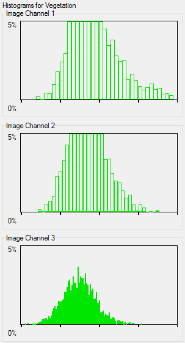
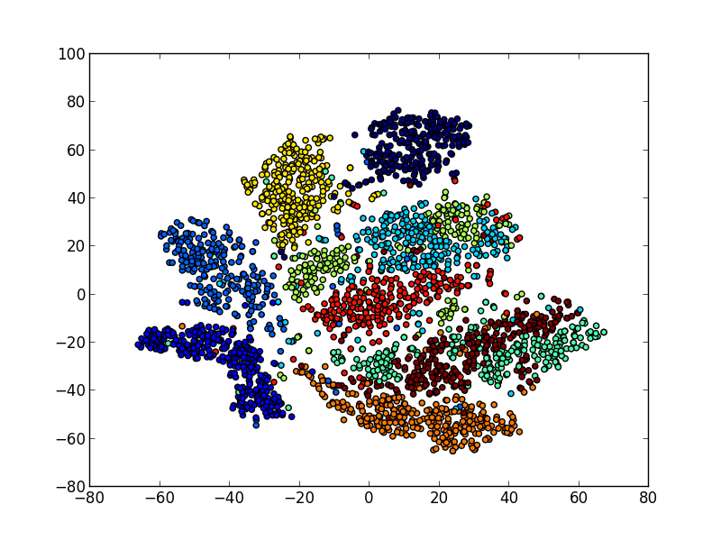

Introduction
This lab involves the use of Supervised Classification to categorize pixels in a remotely sensed image into different land coverage classes (e.g. roads, grasses, buildings, etc...). The lab is split into three different components:
- The selection of training data.
- Classification using PCI Geomatics
- Implementation of Classification software
Supervised Classification
Supervised classification involves the categorization of all pixels in an image into different classes given estimates of the probability distribution of each class. Given a multi-spectral image, the resulting estimates are multi-variate and are often referred to as the spectral signature of the class. Supervised classification, in contrast to unsupervised classification, splits the classification process into two distinct, mutually exclusive, phases:
- Training Data Selection: Samples from each class are used to characterize the spectral signature by estimating the mean vector and covariance matrix. The selection of sample sites is performed by a person and requires careful selection in order to appropriately characterize the spectral signature of a given class, while maintaining sufficient separability between the spectra of different classes 
- Classification: The training data is then used to determine, on a pixel-wise basis, the best-fit class given some optimal decision rule. In this lab, the maximum likelihood and minimum distance decision rules will be explored.
Maximum likelihood classification assumes the spectral signature of each class follows a normal distribution. The log-likelihood form of the multi-variate normal distribution, in addition to Bayes Rule, is used to generate a discriminant function that can be used along with a decision rule for classifying image pixels given an estimated spectral signature.
The discriminant function for maximum likelihood classification is defined as: $$g_{k}(x) = -ln|C_{k}| - (x - \bar{m}_{k})^{T}C_{k}^{-1}(x - \bar{m}_{k})$$
The decision rule for maximum likelihood classification is defined as: $$x \implies \omega_{i} \text{ if } g_{i}(x)>g_{j}(x), \forall j \neq i$$
In contrast to maximum likelihood classification, minimum distance classification makes no assumptions regarding the second moment of each class. The descriminant function can be derived from the maximum likelihood discriminant function by assuming the covariance matrix for each spectra is equal to the identity matrix, eliminating its influence from the resulting likelihood estimate.
The discriminant function for minimum distance classification is the euclidean distance function: $$g_{k}(x) = (x - \bar{m}_{k})^{T}(x - \bar{m}_{k})$$
The decision rule for minimum distance classification is defined as: $$x \implies \omega_{i} \text{ if } g_{i}(x)\lt g_{j}(x), \forall j \neq i$$
Selection of Training Data
The selection of training data that accurately estimates the expected signature for a given class is extremely important in performing accurate classification. Several considerations must be made when attempting to estimate accurate training data from a multi-spectral image:
- Sufficient separability between the spectral signatures of different classes.
- Unimodality of the histogram of the selected training data
When selecting training data, the distribution of each class can be explored by generating histograms for the training data.
 
The separability of each class can be explored by generating feature space plots for all of the training data.
